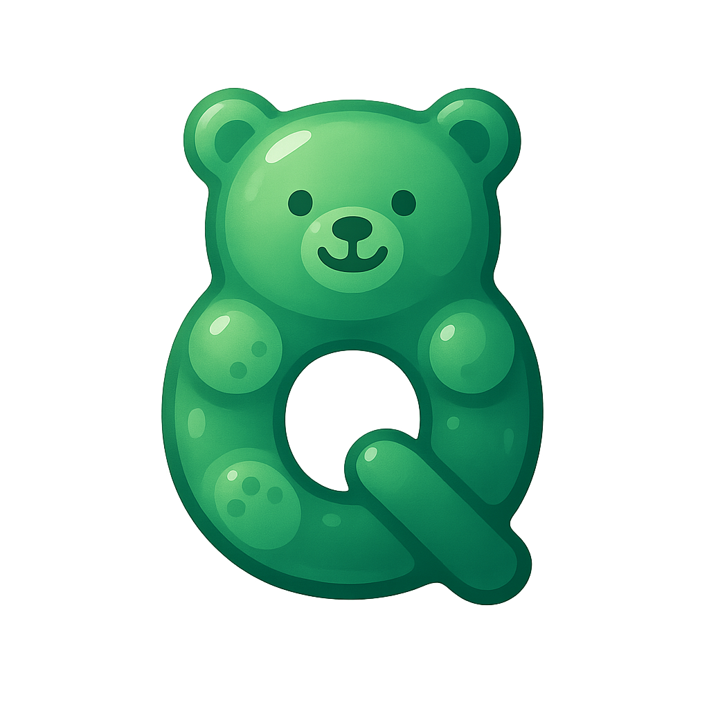

CQE | AI Class Check In System
裝置檢測中…
學員報到
管理後台
Next Class
自助報到
Add
清除
不在名單？自助建立學員
Team
姓名
ID（工號）
建立並報到
取消
＊按「建立並報到」後，系統會用這筆資料完成本次報到。
登入
課程
名單匯入
學員名單
圖表
過去補登
Email
Password
顯示密碼
登入
登出
已登入，可進行課程與統計管理。
建立課程
課程名稱
日期
開始時間
結束時間
說明（選填）
建立課程
載入課程清單
批次建立學員名單（CSV：Team,Name(EN),ID）
匯入名單
下載範例 CSV
學員名單
重新整理
Add
Team
Name (EN)
ID
操作
課程人次 | 圖表
匯出上課人員
＊顯示每門課的出席人數。
過去課程補登
載入學員
查詢
Team
Name (EN)
ID
狀態/選取
將勾選者補登為已報到